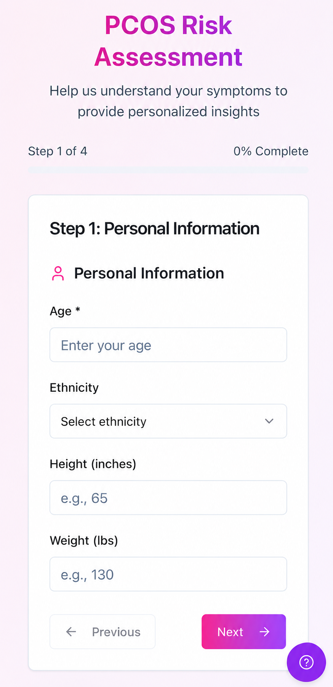

◔
Cycle tracking
Record period dates, flow, cycle length, and changes over time.
OvaFlow helps you track periods, symptoms, and wellness patterns while providing personalized, educational PCOS risk insights based on the information you enter.

OvaFlow organizes the information you already notice into useful, easy-to-review patterns.
Record period dates, flow, cycle length, and changes over time.
Track acne, cramps, energy, mood, hair changes, and other symptoms.
Receive an educational summary based on the assessment answers you provide.
Your personal and health information is stored securely and is not sold to advertisers or data brokers.